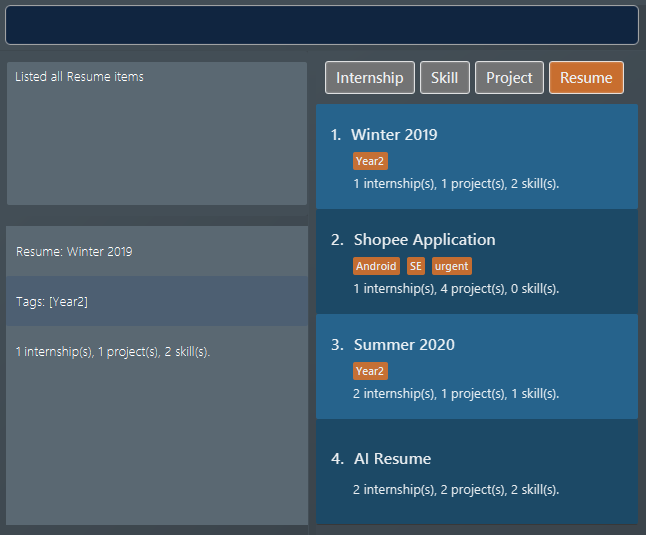
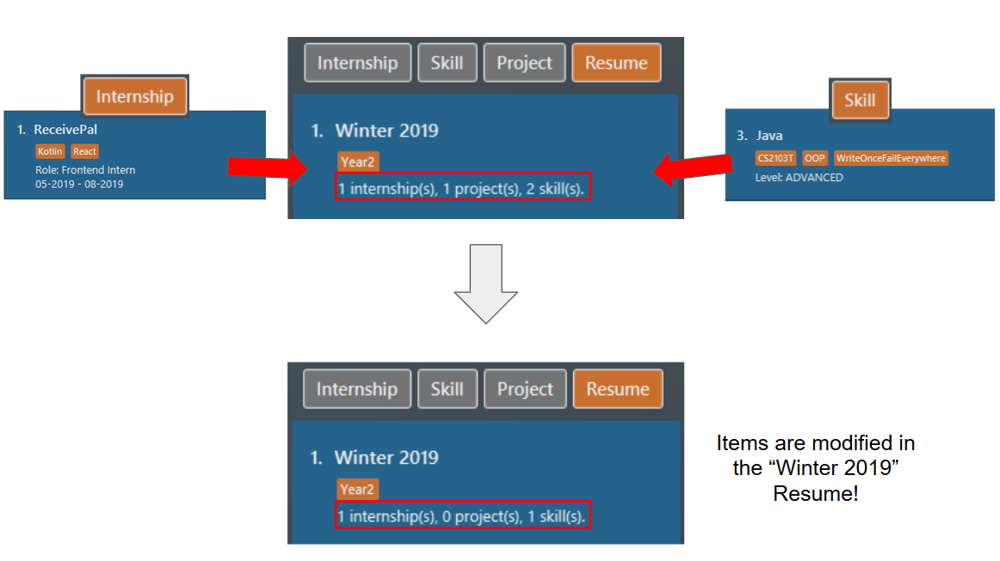
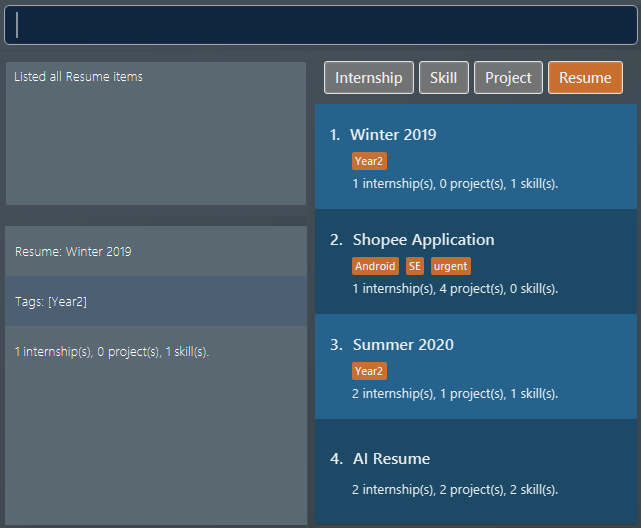

1. Overview
1.1 About the Project
ResuMe is a desktop resume management application developed by a team of students from National University of Singapore (NUS). The application is aimed at university students, who may want to manage different resumes due to internship and job applications.
The project builds upon the code from Address Book Level 3 (AB3), a desktop Address Book application. ResuMe retains the characteristics of AB3, and thus ResuMe has a Graphical User Interface (GUI) while most interactions happen through the Command Line Interface (CLI).
The application is developed using Java, and within a short span of 6 weeks we have contributed a total of more than 25,000 lines of code to the application.
1.2 About the Team
The team consists of 5 Year 2 Computer Science students from NUS, taking the Software Engineering module, CS2103T.
2. Summary of Contributions
2.1 Individual Contributions
My code contributions can be found here: Functional and Test code (via RepoSense)
2.1.1 Enhancements Implemented
-
Major enhancement: added the ability to modify items in the resume:
redit-
What it does: allows the user to selectively modify items in a specified resume.
-
Justification: This is a key feature in the application because a user would need to select existing items in the resume to be included before generating them.
-
Highlights: This enhancement is particularly tricky to implement due to the various possibilities of input that a user can give. Careful parsing of the input is required before the command is processed.
-
-
Major enhancement: added the ability to add items in the resume based on tags:
tagpull-
What it does: allows the user to add items that have been given a particular tag.
-
Justification: This increases the convenience of modifying a resume, since items that have the same tags are likely to be included togehter in the resume.
-
-
Minor enhancement: modified the
editcommand and its parser to suit the application-
Justification: ResuMe requires handling of various item types such as
Internship,ProjectandSkillitems. Therefore, it is necessary to morph the existingParserfrom AB3 to suit our needs.
-
-
Minor enhancement: wrote the
viewcommand-
Justification: Items such as
Internshipomit a lot of details in our list in the GUI. Theviewcommand helps include more details about theItem.
-
2.2 Contributions to team-based tasks:
2.2.1 Morphed CommandResult in overall architecture
-
What it means:
CommandResulthas been separated to many different subclasses which correspond to the differentCommand. -
Justification: Several
CommandResultrequire a special boolean value to indicate that it is the result of a certainCommand. With only one class, the constructor would have to take in many booleans in the constructor and this gets very messy.
2.2.2 Project management
-
Managed releases
v1.2-v1.4(3 releases) on GitHub -
Managed GitHub issue tracker
-
Set-up Travis and Coveralls
3. Contributions to the User Guide
Given below are sections I contributed to the User Guide. They showcase my ability to write documentation targeting end-users. |
{start of extract 1: Resume Edit}
Modifying the content a resume: redit
Modifies the content of a resume to contain the items specified in the command.
redit is a different command from edit. Please visit FAQ for more information.
|
Format: redit RESUME_INDEX TYPE/ [ITEM_INDEX…] [MORE_TYPE/ [ITEM_INDEX…]]…
If you find it a hassle to manually enter items into the resume, you can consider using tagpull!
|
-
For each
TYPE, existing items will be updated to the input items. -
You can add multiple items of a certain type to a
resumeby chainingITEM_INDEXafterTYPE/.
For exampleproj/ 3 6, will addprojectitem of indices 3 and 6 to theresume. -
You can remove all items of type
TYPEby typingTYPE/without specifying anyITEM_INDEXafter it.
Example 1: Adding items into a new resume
Before you try this example, ensure you have added at least one internship, one project, and two skill items. You may verify for their presence by using the list command.
Type in these commands:
-
list i/ res -
redit 1 int/ 1 proj/ 1 ski/ 1 2
Outcome:
-
The first command lists out all
resumes. Assuming you want to modify the contents of the firstresumein the list box.
-
The second command modifies the
resumeat index 1, named "Winter 2019". Theresumenow contains theinternshipitem at index 1,projectitem at index 1, andskillitems at indices 1 and 2. The following screenshot illustrates what happens after this command:
Example 2: Modifying the contents of the resume
Following from example 1, you realise that you actually wanted to use a different set of items for your "Winter 2019" resume. Here is how you can rectify this!
Before you try this example, ensure you have added at least one internship and three skill items. You may verify for their presence by using the list command.
Type in these commands:
-
list i/ res -
redit 1 int/ 1 proj/ ski/ 3
Outcome:
-
The first command lists out all
resumes. Assuming you want to modify the contents of the firstresumein the list box. Since we are following from example 1, the "Winter 2019"resumewould already have some items in it. -
Before the second command, the
resumecontains the same set of items as the one in example 1. The command modifies theresumeat index 1, named "Winter 2019". Theresumenow still contains theinternshipitem at index 1, noprojectitems, andskillitem at index 3. The following screenshot illustrates what happens after this command:
You can think of this command as using only the items that has been specified in the command. In this example, we no longer want the items we have previously added, and we would like the "Winter 2019" resume to contain only the first internship item and the third skill item.
Example 3: No modifications to internship and skill items
Following from example 2, you are now satisfied with the internship and skill items, but you would like to add a project item without changing the internship and skill items. Here is how you can do it!
Before you try out this example, ensure you have at least two project items.
Type in these commands:
-
list i/ res -
redit 1 proj/ 2
Outcome:
-
The first command lists out all
resumes. Assuming you want to modify the contents of the firstresumein the list box. Since we are following from example 2, the "Winter 2019"resumewould already have some items in it. -
Before the second command, the
resumecontains the same set of items as the one in example 2. The command modifies theresumeat index 1, named "Winter 2019". Theresumewill now contain the theprojectitem at index 2. Theinternshipandskillitems remain unchanged. The following screenshot illustrates what happens after this command:
So by leaving out one of the prefixes (TYPE/ ITEM_INDEX…) from the command, you can keep some of the items in your resume!
{end of extract 1}
{start of extract 2: Tag Pull}
Pulling tagged items into the resume: tagpull
Pull all the Internship, Project and Skill items with the specified tag(s) into a resume.
Format: tagpull RESUME_INDEX [#/ TAG]…
This command does not remove items from the resume and will add items on top of the existing items.
|
Example 1: Pulling items using one tag
Before you try this example, ensure you have added some items with the tag SE. You may verify for their presence by using the list command.
Type in these commands:
-
list i/ res -
tagpull 1 #/ SE
Outcome:
-
The first command lists out all
resumes. Assuming you want to modify the contents of the firstresumein the list box.
-
The second command pulls all items which has
SEas the tag into theresumeat index 1, named "Winter 2019". The following screenshot illustrates the outcome of the command if we have 1internshipitem and 2projectitems tagged withSE.
Example 2: Pulling items using multiple tags
Before you try this example, ensure you have added some items with the tag SE and/or github. You may verify for their presence by using the list command.
Type in these commands:
-
list i/ res -
tagpull 1 #/ SE #/ github
Outcome:
-
The first command lists out all
resumes. Assuming you want to modify the contents of the firstresumein the list box.
-
The second command pulls all items which has
SEorgithubas the tag into theresumeat index 1, named "Winter 2019". The following screenshot illustrates the outcome of the command if we have 1internshipitem and 2projectitems tagged withSE, and 1skillitem tagged withgithub.
{end of extract 2}
4. Contributions to the Developer Guide
Given below are sections I contributed to the Developer Guide. They showcase my ability to write technical documentation and the technical depth of my contributions to the project. |
{start of extract 1: Logic}
Logic component
API :
Logic.java
-
Logicuses theResumeBookParserclass to parse the user command. -
This results in a
Commandobject which is executed by theLogicManager. -
The command execution can affect the
Model(e.g. adding a new resume). -
The result of the command execution is encapsulated as a
CommandResultobject which is passed back to theUi. -
In addition, the
CommandResultobject can also instruct theUito perform certain actions, such as displaying help to the user.
Given below is the Sequence Diagram for interactions within the Logic component for the execute("delete 1 i/ res") API call.
delete 1 Command
The lifeline for DeleteCommandParser should end at the destroy marker (X) but due to a limitation of PlantUML, the lifeline reaches the end of diagram.
|
{end of extract 1}
{start of extract 2: Resume Edit}
Resume Edit feature
The Resume Edit feature or redit allows user to modify the content items of the Resume (for example, adding a Skill item or removing an Internship item). It is not to be confused with the edit command, which simply modifies the fields of an Item (such as name).
Current Implementation
The redit command is facilitated by ResumeEditCommand, which extends Command. Therefore, like any other Command classes, it will have an execute method.
Given below is an example usage scenario and how the redit works at each step.
Step 1. The user launches the application, and uses the add command to add several Resume, Internship, Project, and Skill items.
Step 2. The user executes redit 1 int/ 2 command to add the second Internship in the list of Internship items to the first Resume in the list of Resume items.
Step 3. This calls ResumeBookParser#parseCommand(), which would create a new ResumeEditCommandParser object and call the ResumeEditCommandParser#parse() method.
Step 4. A new ResumeEditCommand object is created. It contains the index of the Resume that is to be modified, and three Optional<List<Integer>> representing the indices of Internship, Project and Skill to be modified into the Resume. In this example, the Project and Skill indices are represented by empty Optional because the user did not specify any project or skill indices. (This will be further elaborated in the next section)
Step 5. The ResumeEditCommand#execute() method is called with the current model. A copy of the Resume is created and its content is set to refer to the Internship, Project and Skill items specified by the user.
Step 6. A new ResumeEditCommandResult object, which contains the edited copy of the Resume, is created and returned.
The following sequence diagram shows the process of invokation for redit:

Representation of indices after parsing
In Step 4. above, it is mentioned that Optional<List<Integer>> is used to represent the indices of Internship, Project, and Skill items. This section elaborates further on the representation.
To explain the various representations, we will use the example of executing redit 1 int/ 2 3 proj/:
-
A non-empty
List<Integer>wrapped withOptionalis used to represent the indices when the user specifies both the item prefix and the item indices. In the above example, indices ofInternshipitems will be represented by aList<Integer>of2and3, wrapped withOptional. -
An empty
List<Integer>wrapped withOptionalis used to represent the indices when the user specifies the item prefix, but no item indices are given. In the above example, indices ofProjectitems will be represented by an emptyList<Integer>wrapped withOptional. -
An empty
Optionalis used to represent the indices when the user does not specify the item prefix. In the above example, indices ofSkillitems will be represented with an emptyOptional.
The three representations are used because redit facilitates the following:
-
If the prefix and indices are both present, the resume will be modified to contain the content items of that prefix at the specified indices. In the same example above,
Resumeat index 1 will be modified to containInternshipitems at indices 2 and 3. -
If the prefix is specified but no indices are present, the resume will be modified to remove all the items of that prefix. In the example above,
Resumeat index 1 will be modified to have all itsProjectitems removed. -
If the prefix is not specified, the resume will have the items of that prefix unmodified. In the example above,
Resumeat index 1 will not have itsSkillitems modified. If originally there were 4Skillitems, then after the command execution, it will still have 4Skillitems.
The following activity diagram summarises the execution of ResumeEditCommand:

Design Considerations
Aspect: Whether ResumeEditCommand should extend EditCommand
-
Alternative 1 (current choice):
ResumeEditCommanddoes not extendEditCommand, but extendsCommand.-
Pros: Since
reditmodifies the content items of theResumeand not theResumedetails, this reduces the size of responsibility forEditCommand. Each command class now does one and only one thing so Single Responsibility Principle is observed. -
Cons: Unable to exploit polymorphism if there is similarity with the
EditCommand. From user’s point-of-view, it may also be confusing to have bothreditandedit.
-

-
Alternative 2:
ResumeEditCommandextendsEditCommand-
Pros: Some methods in
EditCommandmay be able to inherited byResumeEditCommand, reducing code duplication. -
Cons: If the functionality of
ResumeEditCommandis limited, it could have been combined withEditCommandentirely. If the intention ofEditCommandis to change theItemdetails (such as name), andResumeEditCommandonly modifies the content items of theResume(without changing any details), then this is also a violation of the Liskov Substitution Principle.
-
Aspect: Representation of indices after parsing
-
Alternative 1 (current choice): Usage of
Optional<List<Integer>>-
Pros: The 3 different cases is naturally represented when
List<Integer>is wrapped withOptional. There is also an enhanced safety, reducing risk ofNullPointerException. -
Cons: More checks are required to ensure that the
Optionalis not empty before getting its value.
-
-
Alternative 2: Usage of
nullandList<Integer>-
Pros: Implementation is much simpler, and code becomes much more concise.
-
Cons: High risk of getting a
NullPointerExceptionifnullis not handled carefully.
-
{end of extract 2}
{start of extract 3: Tag Pull}
Tag Pull feature
The Tag Pull feature is similar to Resume Edit Feature in the sense that it modifies the content items of the Resume. Unlike Resume Edit which modifies using the content item indices, the Tag Pull feature modifies the resume by adding items with the specified tags on top of existing items in the Resume.
Current Implementation
The tagpull command is facilitated by TagPullCommand, which extends Command. Therefore, like any other Command classes, it will have an execute method.
Given below is an example usage scenario and how the tagpull works at each step.
Step 1. The user launches the application, and uses the add command to add several Resume, Internship, Project, and Skill items.
Step 2. The user executes tagpull 2 #/ tech command to add all items that have been tagged with tech to the first Resume in the list of Resume items.
Step 3. This calls ResumeBookParser#parseCommand(), which would create a new TagPullCommandParser object and call the TagPullCommandParser#parse() method.
Step 4. A new TagPullCommand object is created. It contains the index of the Resume that is to be modified, and the tags of the items which the user wants to add. In this example, it will only have the tech tag.
Step 5. The TagPullCommand#execute() method is called with the current model. A copy of the Resume is created and all the items with matching tags are retrieved from model. The content of the copied Resume is updated to now contain all the items with matching tags, on top of existing ones.
Step 6. A new TagPullCommand object, which contains the edited copy of the Resume, is created and returned.
The following sequence diagram shows the process of invokation for tagpull:
The following activity diagram summarises the execution of tagpull:
Design Considerations
Aspect: Integrating Tag Pull to Resume Edit
-
Alternative 1 (current choice): Separating
reditandtagpull-
Pros: Separation of concerns.
redithandles updates ofResumeusing indices andtagpullhandles updates ofResumeusing tags. -
Cons: There is some code duplication due to similarities in behaviour.
-
-
Alternative 2: Combine
reditwithtagpull, making use of#/as prefix forreditcommand-
Pros: It may be intuitive for user to only have a single command that handles modification of
Resume -
Cons: The implementation of
reditbecomes much more complicated as various combinations of input has to be considered. For example, considerations of what the expected behaviour should be if both indices and tags are given as arguments.
-
{end of extract 3} ---